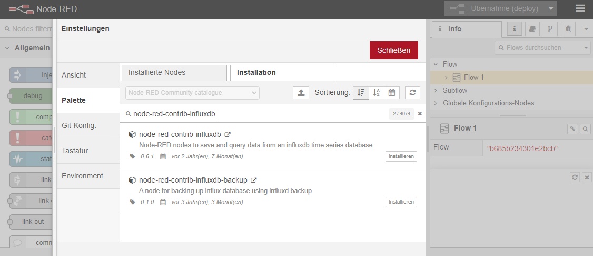
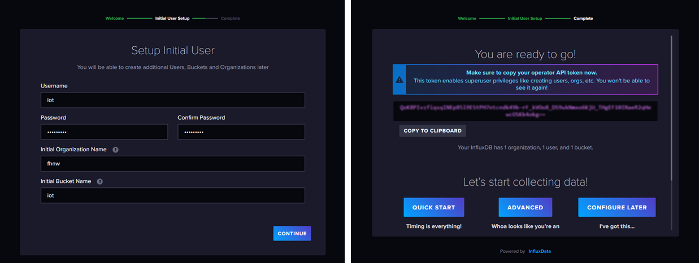
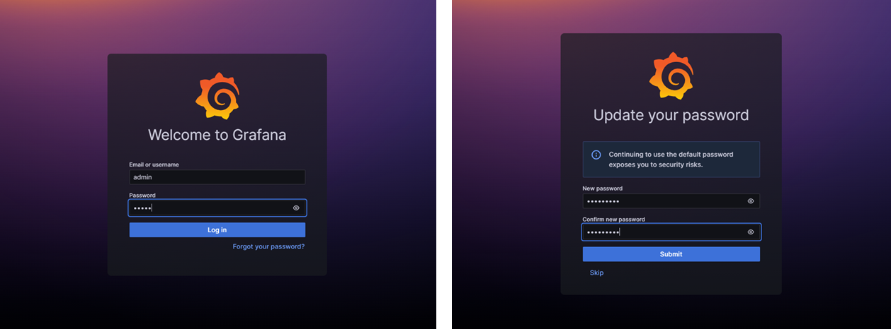
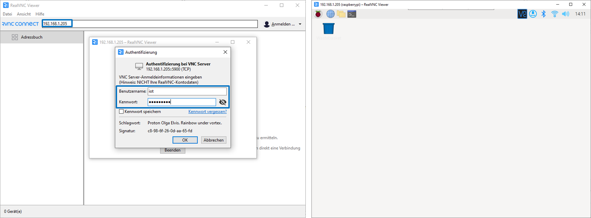
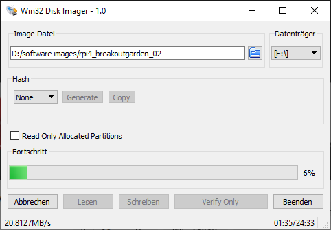
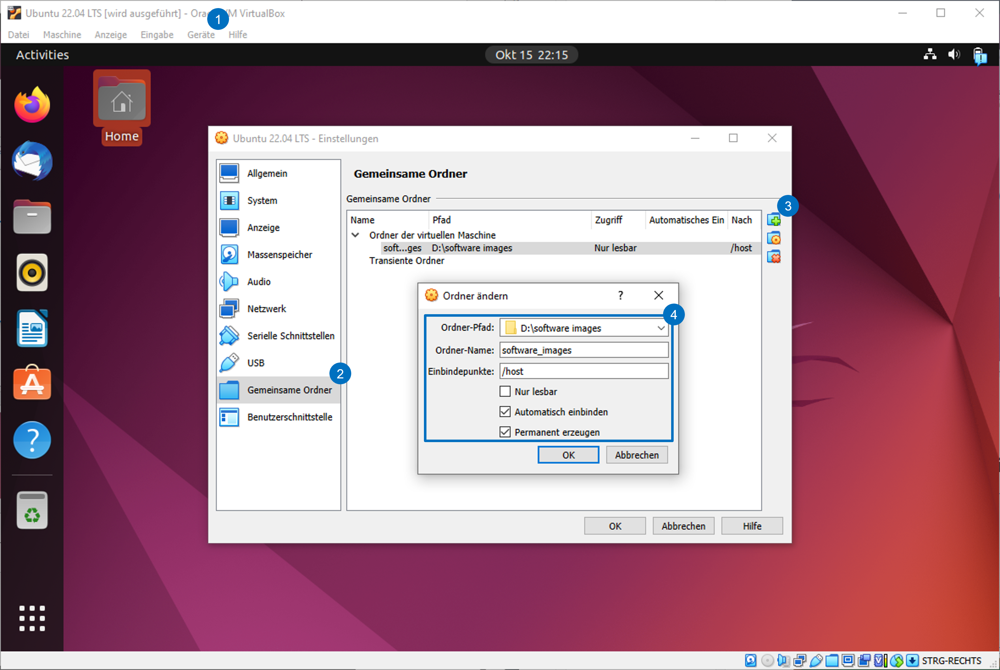
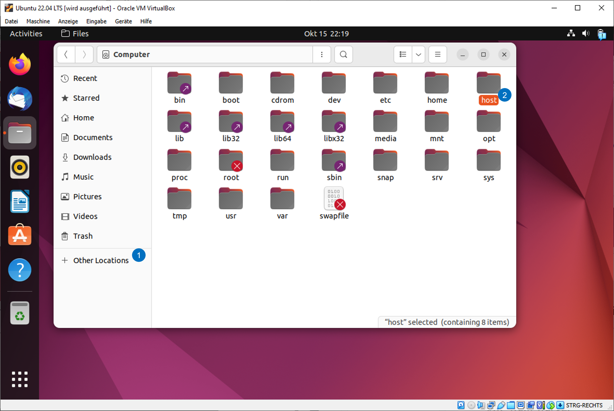
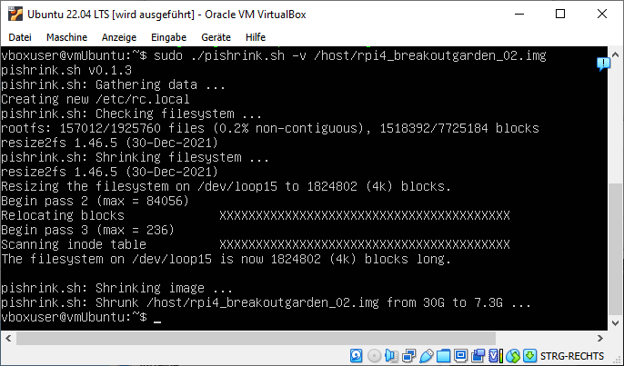
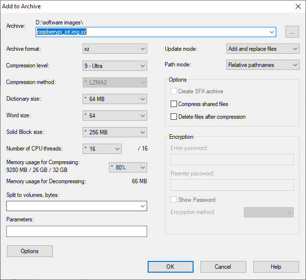
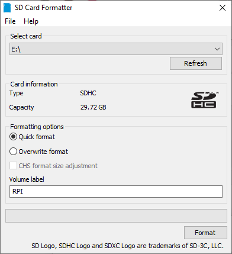

Anhang D — Raspberry Pi IoT Image
Für eine möglichst reibungslose Durchführung der Übungen ist ein vorkonfiguriertes Image hilfreich. Dies gewährleistet, dass alle Studierenden mit der gleichen Software arbeiten und die Übungen nicht durch Installationsprobleme verzögert werden
Für die Übungen mit den Sensoren sind Python und die entsprechenden Sensorbibliotheken erforderlich. Die Installation dieser Bibliotheken ist in den Übungsanleitungen beschrieben. Die Übungen mit dem IoT Stack mit MQTT, InfluxDB, Node-Red und Grafana erfordern eine Installation der Software auf dem Raspberry Pi. Die Installation dieser ist nicht in der Übungsanleitung8 abgedeckt.
Hinweis: Für das Kopieren mehrerer Images auf SD Karten können diese einzel auf die SD Karten geschrieben werden oder empfehlenswert für das Kopieren von mehreren SD Karten lohnt es sich auch eine SD Karten Kopierstation zu verwenden, wie z.B. die Renkforce Speicherkarten-Kopierstation
Raspberry Pi Zugangsdaten
Notiere die Zugangsdaten für den Raspberry Pi und die einzelnen Softwarekomponenten in der untenstehenden Tabelle. Die Zugangsdaten werden für die Übungen benötigt.
| Konto | User | Passwort | Kommentar |
|---|---|---|---|
| Raspberry Pi | |||
| influxdb | organisation: | ||
| grafana |
Installation Shell Script
Shell Script für die Installation der erforderlichen Bibliotheken Script install_iot_software.sh mit dem unten aufgeführten Code erstellen und dem Script die Rechte für die Ausführung setzen mit
sudo chmod +x install_iot_software.shScript mit folgendem sh install_iot_software.sh oder ./install_iot_software.sh Befehl ausführen:
InfluxDB Version: Die Version der InfluxDB auf die neuste Version im Script anpassen.
Shell Script: install_iot_software.sh - Bash Script zu Installation der Software und Libraries für das fächerübergreifende Modul 5200 IoT Installation von: - Python Libraries für die Pimoroni Sensoren - Klonen der Libraries mit Beispielen in Documents/Libraries - Jupyter Notebook - MQTT, Mosquitto Broker und Clients - Node-Red - InfluxDB - Grafana - VNC
#!/bin/bash
COL='\033[0;32m' # Farbcodes für die Shell setzen
NC='\033[0m' # No Color
echo "${COL}Raspberry Pi aktualisieren${NC}"
sudo apt update
sudo apt full-upgrade -y
sudo apt autoremove -y
echo "${COL}VNC Installation${NC}"
sudo apt-get install realvnc-vnc-server
sudo apt-get install realvnc-vnc-viewer
echo "${COL}i2c-tools Installation${NC}"
sudo apt install python3-smbus
sudo apt install -y i2c-tools
echo "${COL}Installation der Python Bibliotheken${NC}"
sudo pip3 install matplotlib scipy pigments numpy
sudo pip3 install jupyter
echo "${COL}Installation der Pimoroni & Adafruit Python Bibliotheken${NC}"
sudo apt install python3-rpi.gpio python3-spidev python3-pip python3-pil python3-numpy
sudo pip3 install st7789
sudo pip3 install bme680
sudo pip3 install icm20948
sudo pip3 install as7262
sudo pip3 install max30105
sudo pip3 install vl53l5cx-ctypes
sudo pip3 install RPI.GPIO adafruit-blinka
sudo pip3 install adafruit-circuitpython-mlx90640
echo "${COL}Klonen der Pimoroni Python Bibliotheken${NC}"
echo "${COL}in Documents/Libraries${NC}"
cd Documents
mkdir Libraries
cd Libraries
git clone https://github.com/pimoroni/st7789-python
git clone https://github.com/pimoroni/bme680-python
git clone https://github.com/pimoroni/icm20948-python
git clone https://github.com/pimoroni/as7262-python
git clone https://github.com/pimoroni/max30105-python
git clone https://github.com/pimoroni/vl53l5cx-python
git clone https://github.com/pimoroni/mlx90640-library
cd ../../
echo "${COL}Mosquitto Server, Clients und Python Libraries Installation${NC}"
sudo apt install mosquitto -y
sudo apt install mosquitto-clients -y
sudo systemctl enable mosquitto.service
sudo systemctl restart mosquitto
sudo pip3 install paho-mqtt
echo "${COL}Node-Red Installation${NC}"
# add --help to display install options
bash <(curl -sL https://raw.githubusercontent.com/node-red/linux-installers/master/deb/update-nodejs-and-nodered) --confirm-root --confirm-pi --confirm-install
sudo systemctl enable nodered.service
sudo systemctl start nodered.service
echo "${COL}InfluxDB Installation${NC}"
wget https://dl.influxdata.com/influxdb/releases/influxdb2-2.7.1-arm64.deb
sudo dpkg -i influxdb2-2.7.1-arm64.deb
sudo service influxdb start
echo "${COL}Grafana Installation${NC}"
sudo apt-get install -y apt-transport-https software-properties-common wget
sudo mkdir -p /etc/apt/keyrings/
wget -q -O - https://apt.grafana.com/gpg.key | gpg --dearmor | sudo tee /etc/apt/keyrings/grafana.gpg > /dev/null
echo "deb [signed-by=/etc/apt/keyrings/grafana.gpg] https://apt.grafana.com stable main" | sudo tee -a /etc/apt/sources.list.d/grafana.list
sudo apt-get update
sudo apt-get install grafana -y
sudo systemctl daemon-reload
sudo systemctl start grafana-server
sudo systemctl enable grafana-server.service
sudo apt autoremove -yKonfigurationsdateien editieren
Raspberry Pi Einstellungen für I2C, SPI, SSH, VNC anpassen
Interface Options aktivieren In den Raspberry Pi Konfigurationseinstellungen mit sudo raspi-config die Interface Optionen I2C, SPI, SSH und ev VNC (Virtual Network Computing) aktivieren.
Baud rate des I2C Protokolls anpassen
Baud rate des I2C Protokolls mit sudo nano /boot/config.txt öffnen und folgende Zeile ergänzen. Mit Ctrl+o und Ctrl+x speichern.
dtparam=i2c_arm=on,i2c_arm_baudrate=400000Mosquitto Server Konfiguration
Mosquitto Server Konfiguration anpassen mit sudo nano /etc/mosquitto/mosquitto.conf# und am Ende der Datei folgendes einfügen ohne #!
listener 1883
allow_anonymous trueMosquitto Server neu starten mit sudo systemctl restart mosquitto
Node-Red Einstellungen initialisieren mit node-red admin init - yes installation customise settings - yes keep settings file at default location - no setup user security - yes enable project features - select manual workflow - select default theme - yes allow function nodes to load external modules
Node-RED Settings File initialisation
=====================================
This tool will help you create a Node-RED settings file.
✔ Settings file · /home/iot/.node-red/settings.js
User Security
=============
✔ Do you want to setup user security? · No
Projects
========
The Projects feature allows you to version control your flow using a local git repository.
✔ Do you want to enable the Projects feature? · Yes
✔ What project workflow do you want to use? · manual - you must manually commit changes
Editor settings
===============
✔ Select a theme for the editor. To use any theme other than "default", you will need to install @node-red-contrib-themes/theme-collection in your Node-RED user directory. · default
✔ Select the text editor component to use in the Node-RED Editor · monaco (default)
Node settings
=============
✔ Allow Function nodes to load external modules? (functionExternalModules) · YesInstallationen testen und initialisieren
Mosquitto Broker
Testen ob der Mosquitto Broker und Clients lokal auf dem Raspberry Pi funktionieren. Erstelle einen Subscriber der für das Topic iot/temperature eine Subscription erstellt.
mosquitto_sub -h 127.0.0.1 -v -t 'iot/temperature'Öffne ein zweite Shell und erstelle einen Publisher für dasselbe Topic
mosquitto_pub -h 127.0.0.1 -t 'iot/temperature' -m 'Aussentemperatur: 22° Celsius'Node-Red
Node-Red Server testen : <IP-Adresse>:1880 http://192.168.1.205:1880 Influxerweiterung Palette installieren: Hamburgermenu oben-rechts / Paletten verwalten und unter Palette / Installation die Palette node-red-contrib-influxdb installieren.

InfluxDB
InfluxDB Server testen: <IP-Adresse>:8086 http://192.168.1.205:8086 Den Initial User erstellen mit Username, Password, Organisation und einem Bucket Name, der ersten Datenbank. Im Anschluss mit Logout/Login den Zugang verifizieren.

Operator API token speichern! Das Superuser Passwort wird nur einmal angezeigt. Das Operator API token kopieren und an einem sicheren Ort speichern! Nach dem Logout/Login ist das Passwort nicht mehr sichtbar.
Grafana
Grafana Server testen: <IP-Adresse>:3000 http://192.168.1.205:3000 Grafana startet mit dem Default Admin User: admin und Passwort: admin. Das Passwort ändern und im Anschluss mit Logout/Login den Zugang verifizieren.

Jupyter Notebook
Jupyter Notebook testen <IP-Adresse>:9999 http://192.168.1.205:9999
# jupter notebook installation testen
jupyter-notebook --no-browser --ip=192.168.1.205 --port 9999 --notebook-dir ~/DocumentsVNC Testen
VNC Viewer auf dem PC installieren. Real VNC Viewer (standalone .exe, d.h. es ist keine Installation erforderlich).
Hinweis: Beim Starten des VNC Viewers muss man sich nicht anmelden sondern nur die Option Verwenden Sie RealVNC Viewer ohne sich anzumelden wählen.

Raspberry Pi Image verkleinern
Das Raspberry Pi Image kann mit dem Tool PiShrink verkleinert werden. PiShrink kann auf dem Raspberry Pi oder auf einen anderen Linux System wie Ubuntu oder einer virtuellen Machine mit einem Linux installiert und genutzt werden.
- Backup Image auf den lokalen Rechner mit Win32DiskImager schreiben.
- Virtuelle Machine mit Linux Ubuntu/Debian mit gemeinsamen Ordner starten
- Mit dem Script https://github.com/Drewsif/PiShrink das Image verkleinern
- SD Karte Formatieren mit SD Card Formatter
- Image auf SD Karte schreiben mit Win 32 Disk Imager oder Raspberry Pi Imager
- Für die Archivierung kann das Image mit 7zip zusätzlich komprimiert werden (Archive Format
.xzund KompressionsstufeUltra)
Tutorial: How I Backup and Shrink My SD Card Images - Youtube
Backup Image mit Win32DiskImager schreiben

Virtuelle Machine mit VM VirtualBox starten und in den Einstellungen der VM über Geräte/Gemeinsame Ordner einen gemeinsamen Ordner zwischen VM und dem lokalen Rechner einrichten.

Das Image sollte nun im File Explorer unter “+ Other Locations” als Ordner host eingebunden und sichtbar sein.

Öffne nun ein Terminal damit das Script pishrink.sh installiert und ausgeführt werden kann.
Tipp: Falls das Terminal nicht öffnet mit Ctrl+Alt+F3 in das TTY Terminal wechseln.
Tipp: Falls der VM User noch keine Adminrechte hat (per Default hat der User kein Adminrechte), können diese nachträglich gesetzt werden mit:
su -
usermod -a -G sudo vboxuserGitHub: https://github.com/Drewsif/PiShrink
# install prerequisites
sudo apt install parted xz-utils
# download the pishrink script
wget -O ./pishrink.sh https://raw.githubusercontent.com/Drewsif/PiShrink/master/pishrink.sh
# make the script executable
chmod +x ./pishrink.sh
# run pishrink on the .img file
sudo ./pishrink.sh -v /host/≪%imagename.img%≫
Image mit 7-Zip zusätzlich komprimieren File Kontextmenu 7-Zip/Add to Archive und als Archive Format .xz sowie den Compression Level 9-Utlra wählen.

.xz.Falls die SD Karte schon früher für Raspberry Pi Images benutzt wurde und mehrerere Partionen aufweist, kann es helfen die Karte mit dem SD Card Formatter nochmals von Grund auf zu formatieren.
